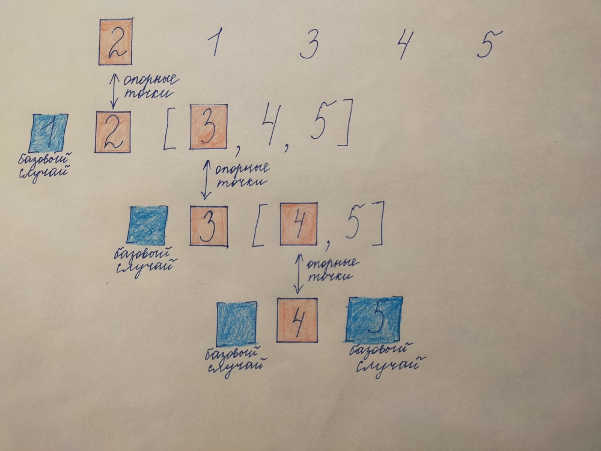

Алгоритм "быстрой сортировки". Сортировка списка.
Условие:
РАБОТАЕТ НАМНОГО БЫСТРЕЕ СОРТИРОВКИ ВЫБОРОМ. ОСНОВАНА НА СТРАТЕГИИ ---РАЗДЕЛЯЙ И ВЛАСТВУЙ---.
В зависимости от выбора опорной точки, О-большое в худшем случае будет O(n), а в лучшем O(log n). O-большое (n log n).
С помощью этого алгоритма необходимо отсортировать список [2, 1, 3, 4, 5].
Иллюстрация алгоритма:

Код:
"""АЛГОРИТМ БЫСТРОЙ СОРТИРОВКИ.
РАБОТАЕТ НАМНОГО БЫСТРЕЕ СОРТИРОВКИ ВЫБОРОМ. ОСНОВАНА НА СТРАТЕГИИ ---РАЗДЕЛЯЙ И ВЛАСТВУЙ---"""
def quick_sort_function(a):
if len(a) == 1 or len(a) == 0: # базовый случай, не требующий сортировки, т.е. список, состоящий из одного элемента
return a # возвращает список без изменений
else:
before = []
pivot = [a[0]] # первый элемент списка - это опорный элемент
after = []
for index, value in enumerate(a):
if index != 0:
if value < a[0]:
before.append(value)
elif value > a[0]:
after.append(value)
temp = quick_sort_function(before) + pivot + quick_sort_function(after) # проиисходит сборка отсортированного списка
return temp
# ввод данных
a = [2, 1, 3, 4, 5]
a_quick_sort = quick_sort_function(a)
print(a_quick_sort)